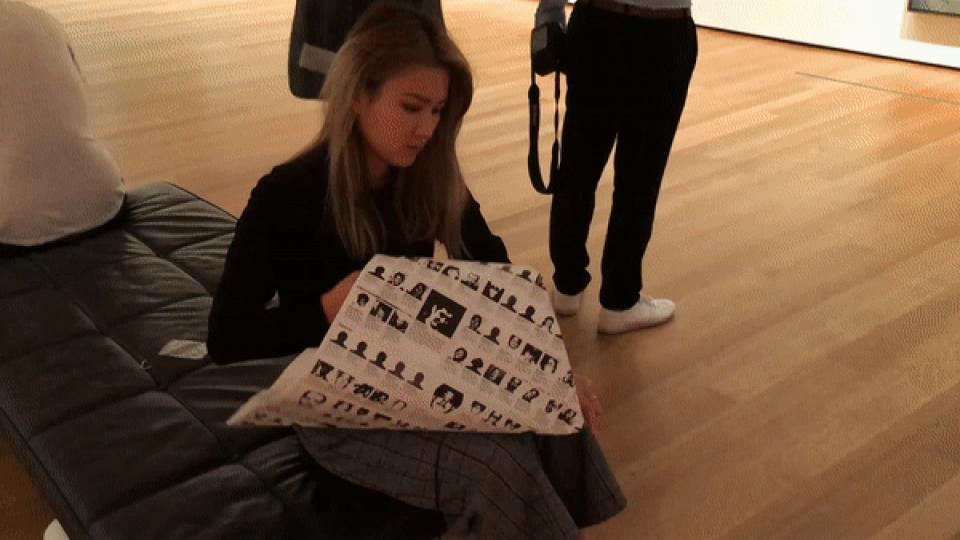

A Happning at MoMA
A Happning at MoMA (2018)- During my visit to the Museum of Modern Art in New York,
I observed that all the viewers were rolling up the poster of Félix González-Torres's artwork.
Amused by this phenomenon, I decided to do an impromptu experiment.
I sat down in the center of the gallery and began folding origami using the same poster.
As a result, other individuals in the gallery started to follow me, creating their own origami pieces.
This experience showcased the impact that one person can have on a situation,
how eaisly people got influenced and leading to a significant change in the atmosphere and interactions of those present. - 
-